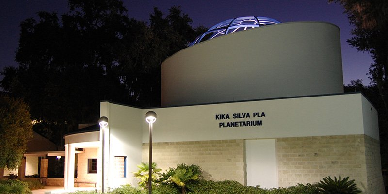
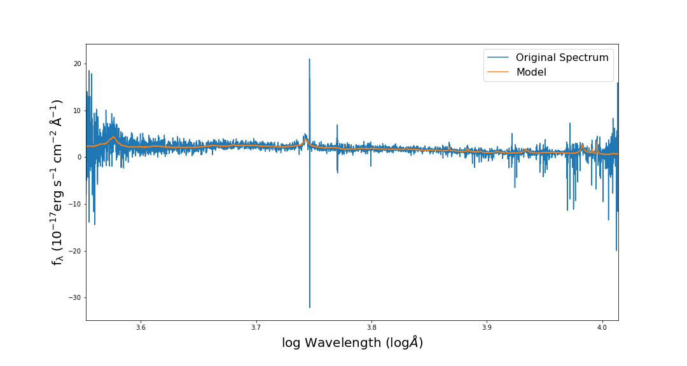

Table of Contents
Research
I currently work in Paul Torrey's group at the University of Virgina (formerly at Florida).
What do I study?
I am a galaxy evolution theorist, therefore I spend a lot of time in cosmological simulations. Recently, I have been trying to understand the baryon cycle -- specifically by quantifying how changes in stellar feedback models implact galaxies as a whole. I've been trying to understand if there are obsverational diagnostics for the extent to which a galaxy's feedback is "bursty" or "gentle".
Interested in learning more?
Check out:
- The oral defense of my project master's project (Gas-phase metallicity break radii in star-forming galaxies in IllustrisTNG)
- Slides from a recent talk I gave! [without all the cool animations and videos :( ]
Publications (First author)
Interplay of Stellar and Gas-Phase Metallicities: Unveiling Insights for Stellar Feedback Modeling with Illustris, IllustrisTNG, and EAGLE
More coming (very!) soon...
Gas-phase metallicity break radii of star-forming galaxies in IllustrisTNG
Accepted to MNRAS 12/16/2022!
Check out my oral defense of this project.
Teaching
| Institution | Course | Semester |
|---|---|---|
| University of Florida | Ast 1022 - Astronomy Labratory* | Spring 2023 |
| Ast 1022 - Astronomy Labratory* | Spring 2022 | |
| Ast 1002 - Discovering the Universe | Fall 2021 | |
| University of Illinois** | Astr 330 - Extrterrestrial Life | Spring 2021 |
| Astr 330 - Extraterrestrial Life | Winter 2020/2021 | |
| Astr 100 - Introduction to Astronomy | Fall 2020 | |
| Astr 150 - Killer Skies: Astro-Disasters | Fall 2020 |
*As the lab instructor for Astronomy 1022, I was the primary instructor for two sections of the course. Responsibilites included giving two lectures every week (one for each section), conducting experiments, grading lab reports, and managing students.
**For all courses at the University of Illinois, I was employed as a Course Assistant. This title was given to undergraduates who were helping professors grade.
Astronomy 1022 Lab Manual
During the Spring 2022 semester, I undertook the task of revising the new, tenth edition of the University Florida Astronomy 1022 manual, "Hands-on Astronomy". Each of the 15 different labs I had a hand in modernizing and helping overall functionality.
Originally compiled in 1997 and sparsely been updated since, I translated the old version into LaTeX. The quality of life changes added a dynamic quality to the manual that should hopefully allow the Department of Astronomy to be able to use and update for years to come.
This manual is a required text for all students enrolled in the Astronomy 1022 lab course. To this day, students (and instructors) are still benefitting from the revisions that I implemented. This textbook is available for purchase at the Target Copy store on University Ave in Gainesville
ALEX Labs
In addition to the Astronomy 1022 lab manual/textbook, during the Spring and Summer of 2022, I implemented new computer lab software into the curriculum. hese labs are inspired by the Contemporary Lab Experiences in Astronomy (CLEA) Labs created by Gettysburg College. Those labs had been in use by the Florida Astronomy department for well over a decade before these labs came along. CLEA labs ceased operations around 2016. In the years following, some of the software became inoperable on UF's Windows 10 machines.
Seeing the writing on the wall, as well as an opportunity to improve upon the formula these original labs had, I took it upon myself to reprogram some of these labs. The intent was to make them "future-proof". To that end, I programmed these labs in HTML/Javascript. The labs are in a more stable place than when I started my TA position for this course.
The labs that I have programmed are You Can Weigh Jupiter (based on the CLEA lab of the same name), Astronomical Spectroscopy II (based on "The Flow Of Energy Out Of The Sun" by CLEA), and Measuring the Hubble Constant (based on the CLEA lab of the same name).
These labs are hosted here on my website. Click the button below to see them.
Kika Silva Pla Planetarium
Starting in the Fall Semester of 2021, I work at the Kika Silva Pla Planetarium at Santa Fe College in Gainesville, FL. I work there alongside James Albury, the planetarium director and star of "The Sky Above Us" webseries.
What did I do at the Planetarium?
I engage in science outreach to a wide variety of audiences.
The planetarium hosts weekly events on Fridays and Saturdays (starting 11/12/2021) for a series of different shows.
The show topics range from educational to entertaining and all serve to get the public more interested in space and astronomy.
My favorite accomplishment during my time at the Planetarium was learning to perform "Florida Skies", an hour long show giving the public a tour of the night-time sky.
Within my first eight months of working at the planetarium, I was able to perform this tour with our CHRONOS-II optical-mechanical projector.
Show Credits
Florida Skies Winter, Spring, Summer, and Autumn - "Host", "Planetarium Staff"
Music 360: Gustav Holst's The Planets - "Production Crew"
Dynamic Earth - "Closed Captions for KSP"
Center for Academic Resources in Engineering (CARE) at UIUC
My invovlement with CARE
During undergrad, I tutored for the College of Engineering. I tutored a number of different courses ranging in disciplines. During my junior year, I was appointed to the leadership team, wherein I learned valuable skills in not only science communication and presentation, but in managing a team.
My work as a tutor had a significant, positive impact on my fellow students. Three to four times a week for nearly 3 years, I would field many questions and help students succeed in any way that I could. I was recognized during my last semester as being honored with Tutor of the Year Honorable Mention at the University level.
Walk-in Tutoring
CARE hosts daily tutoring sessions, typically from noon to midnight, where any student can come into our walk-in space and ask questions. Tutors are rotated in and out during these times and can answer questions on a myriad of different topics.
During my time as a CARE tutor, I answered questions on the following courses (courses only in College of Engineering):
Physics:
- 100 (Thinking About Physics)
- 211 (Introductory Mechanics)
- 212 (Introductory E&M)
- 213 (Introductory Thermodynamics)
- 214 (Introductory Quantum Mechanics)
- 225 (Relativity and Math Applications)
- 115 (Preparation for Calculus)
- 220/221 (Calculus I)
- 231/231E (Calculus II)
- 241 (Calculus III)
- 285 (Differential Equations)
- 415 (Linear Algebra)
- 101 (Introduction to Computing -- Python)
Exam Review Sessions
In addition to walk-in tutoring, CARE hosts exam-review sessions for a number of different freshman- and sophomore-level courses.
These events are office hours sytle: two hours in length where students can come and ask a small team of tutors any questions about what they are working on in a particular course.
During the summer before my senior year of undergrad, I aided in creating new worksheets for the University of Illinois' College of Engineering's tutoring center.
All the worksheets were created in LaTeX and maintained by myself and others during the school year.
Here are some of the worksheets as they were in May of 2021.
Additionally, I created a rudimentary Tikz guide for the diagrams that I created:
Data Analysis
During my tenure as a tutor with CARE, I also looked at the traffic patterns of our walk-in tutoring center. I assembled these reports using python and LaTeX and preseneted them monthly, as well as every semseter, to the entire team. Here are a couple of reports.
Training Oncoming and Future tutors
Additional responsibilities that I was handed as a member of the leadership team was to lead a demonstration interview for tutor applicatants as well as to document my work for future iterations of CARE.
The interviews with the candidates consisted of a 25-minute process where the applicant was handed a problem from a subject of their chosing and walked us through the solution. This process was done in order to assess the applicant's ability to guide students through a problem they were having trouble with. After the demonstration, we asked applicants a series of peer advising questions to determine if they could accurately recognize signs on mental distress and recommend resources on campus to help.
Undergraduate Research
During my time at Illinois, I participated with two research groups: Professor Bryan Dunne's and Professor Yue Shen's. I started with Professor Dunne in the fall semester of my senior year and with Professon Shen the spring of my senior year.
Professor Bryan Dunne
My work with Professor Dunne was focused on beginning research methods. The program was run through Our Solar Sibilings, maintained and operated by Michael Fitzgerald, out of Melbourne Australia. The program consisted of weekly modules intended to get students familiar with the process of research. Our group, made up of three undergraduate students, worked on an observation project on variable stars of the RR Lyrae variety. Our target: V0660 Andromeda.
One of the first modules had us get familiar with the photo-editing program Gimp. We chose a supernova at random, requested composite images, and stacked them together in Gimp. Below is the result. The next, and (unfortunately due to time constraints) last, step of this project was the literature review. We were beginning to assemble the framework of a paper when we ran into out of time for the project.

Professor Yue Shen
My work with Professor Shen was centered on the Sloan Digitial Sky Survey (SDSS) Data Release 16, specifically the quasars. We wanted to analyze and get rid of a lot of the noise on the spectrum of these quasars. This project was an analysis project and more hands-on with coding than my previous experience with Professor Dunne. My small part in this project was to translate an IDL script into Python. The script filtered out this noise and give a much neater spectral emission line.
